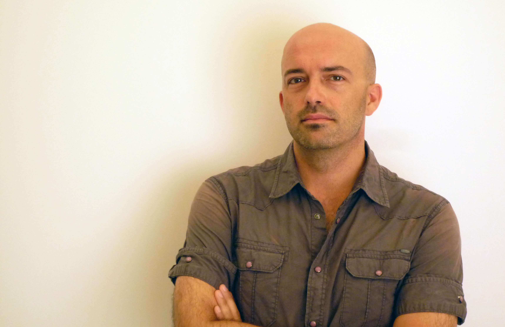

Registrazione
Sessioni multi-traccia ad alta risoluzione per solisti, ensemble, band e orchestre. Microfonazione, pre-amplificazione e acquisizione in Pro Tools.
Per: artisti · etichette · ensemble
Sound Engineer · Produttore · Didatta
Più di 30 anni a dare forma al suono — in studio, dal vivo, in aula.


Sono un sound engineer e produttore musicale con oltre 30 anni di esperienza, specializzato in registrazione, mixing, mastering e post-produzione audio. Ho iniziato la mia carriera nel 1993 alla Synergy Records di Torino e da allora ho lavorato con artisti, etichette discografiche, broadcaster e istituzioni in tutta Italia.
Tra i momenti più significativi del mio percorso, il progetto per le Olimpiadi Invernali di Torino 2006, dove ho contribuito alla produzione audio delle cerimonie ufficiali. Un riconoscimento della fiducia che artisti e istituzioni continuano a riporre nel mio lavoro.
Dall'idea al master finale: un interlocutore unico per ogni fase del progetto audio.
Sessioni multi-traccia ad alta risoluzione per solisti, ensemble, band e orchestre. Microfonazione, pre-amplificazione e acquisizione in Pro Tools.
Per: artisti · etichette · ensemble
Bilanciamento, elaborazione e spazializzazione per un mix che funziona su qualsiasi sistema d'ascolto. Approccio ibrido analogico-digitale.
Per: stereo · stem · Dolby Atmos
Finalizzazione del master per streaming, vinile e CD. Loudness targeting LUFS, ISRC, metadata e DDP per la stampa fisica.
Per: streaming · vinile · CD/DDP
Sound design, montaggio e mix per video, documentari, spot e podcast. Esperienza con pipeline broadcast RAI e produzioni audiovisive professionali.
Per: video · broadcast · podcast
Arrangiamento e produzione di brani originali. Dalla demo al prodotto finito, con attenzione alla direzione artistica e alla coerenza stilistica.
Per: artisti · label · sync
Corsi individuali per tecnici del suono, produttori e musicisti. Online e in presenza. 25+ anni di insegnamento alla Scuola APM alle spalle.
Per: online · in presenza · Pro Tools


Saluzzo (CN) · La prima scuola audio d'Italia
Progettazione curricolare e direzione dei corsi di sound engineering, produzione musicale e sound design. Migliaia di tecnici e produttori formati in oltre 25 anni.
Torino · XX Giochi Olimpici Invernali
Produzione audio per le cerimonie ufficiali dei Giochi. Gestione tecnica audio su scala internazionale per un evento con miliardi di spettatori.
Torino · Radiotelevisione Italiana
Formazione tecnica interna per i professionisti audio della sede RAI di Torino sulla transizione verso i sistemi di produzione digitale.
Torino · Studio di riferimento torinese
House engineer e produttore per 16 anni. Sessioni con artisti italiani e internazionali, dalla registrazione al master.
Torino
Registrazione, editing e post-produzione per produzioni discografiche e commerciali.
Torino · Vinyl Magic Records
Primo incarico professionale. Registrazione e produzione di musica elettronica e dance. Adozione precoce di Pro Tools sin dal 1994.
Saluzzo (CN) · Voto: 95/100
Diploma in Sound Engineering con voto 95/100. La stessa scuola dove avrei poi insegnato per oltre 25 anni.
«Un numero record, ogni anno gli iscritti aumentano. Siamo stati la prima scuola in Italia. Era il 1988, una scelta pionieristica.»
«La musica digitale genera un volume d'affari pari al 9% del fatturato mondiale della musica registrata. Una rivoluzione ancora in corso.»
«Nuove figure? No, piuttosto un aggiornamento di competenze. Il tecnico del suono moderno deve saper leggere l'evoluzione del mercato.»
Che si tratti di una registrazione, un mix, un master, un percorso formativo o una consulenza — scrivimi. Rispondo entro 24 ore.